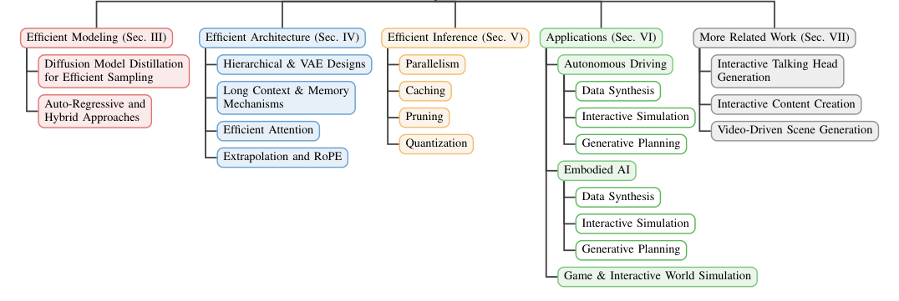
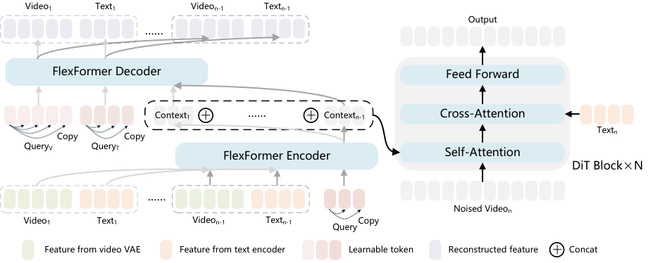
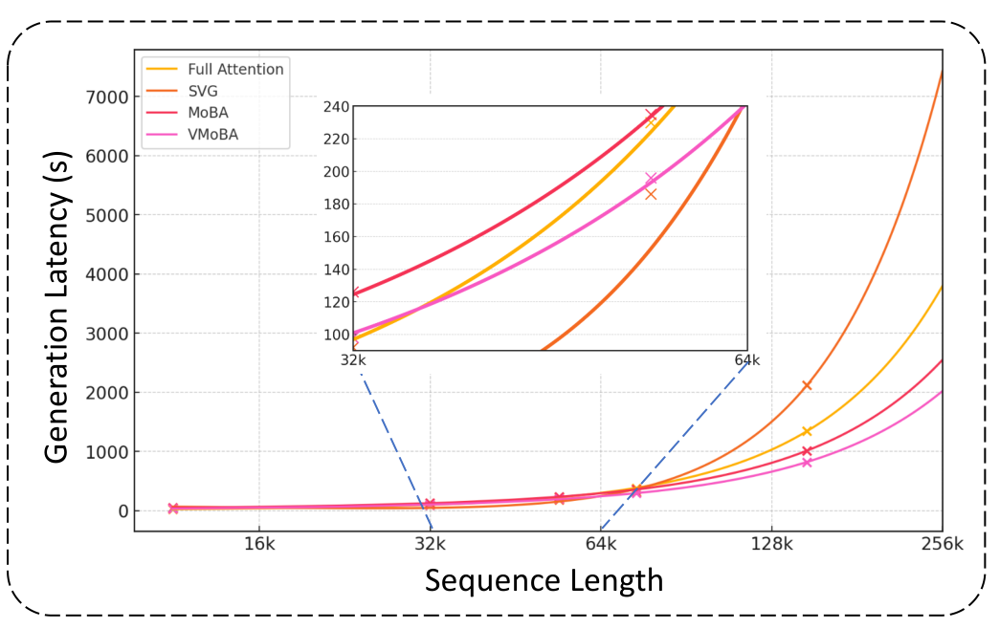
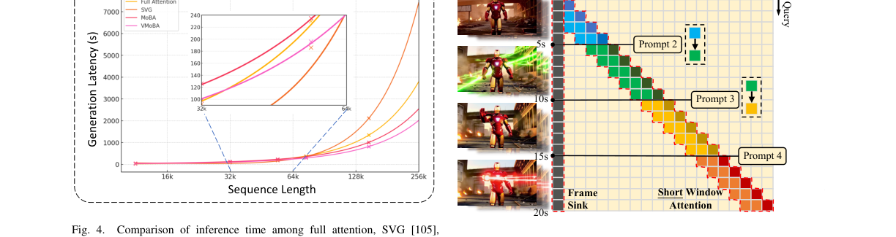
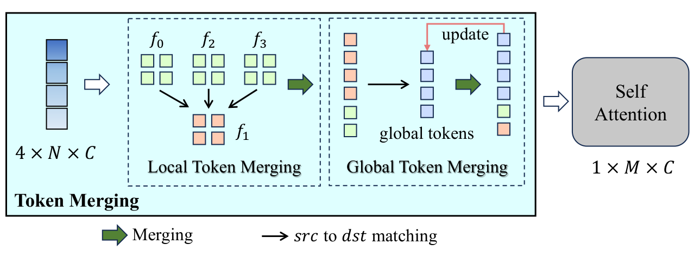
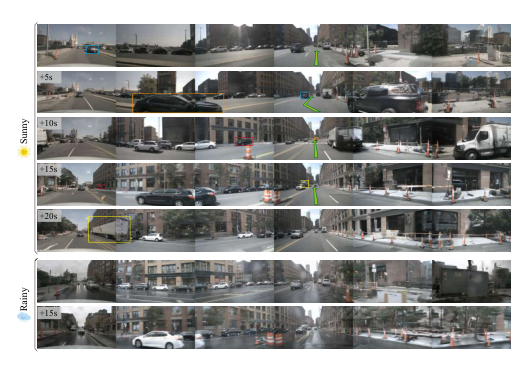
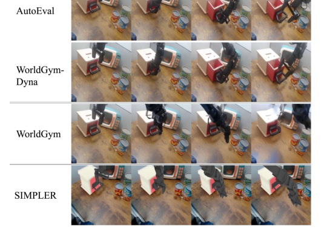

Video
简单摘要
这篇工作的落点不是只改进一个局部模块，而是围绕完整任务链路重新组织系统设计。作者首先回答“为什么这个问题值得做”，接着说明现有方案为什么不足，最后再解释自己的方法如何把表示、训练和推理串成一条更可行的路径。
按照论文摘要的原意，这篇工作最关键的信息可以概括为：视频生成的快速发展使模型能够模拟复杂的物理动力学和长期因果关系，将它们定位为潜在的世界模拟器。然而，世界模拟的理论能力和时空建模的繁重计算成本之间仍然存在重大差距。为了解决这个问题，我们全面、系统地回顾了视频生成框架和技术，将效率视为实际世界建模的关键要求。我们在三个维度上引入了一种新颖的分类法：高效的建模范式、高效的网络架构和高效的推理算法。我们进一步表明，弥合这种效率差距可以直接增强自动驾驶、嵌入式人工智能和游戏模拟等交互式应用程序的能力。最后，我们确定了基于视频的高效世界建模的新兴研究前沿，认为效率是将视频…
如果把它放在更大的技术脉络里理解，这篇论文可以视为“问题定义 → 方法设计 → 优化训练 → 实验验证”的完整闭环，而不是只给出一个孤立技巧。这样的工作更适合被写成博客精读，因为它的价值不在某一行代码，而在整条设计链路为什么成立。


视频生成的快速发展使模型能够模拟复杂的物理动力学和长期因果关系，将它们定位为潜在的世界模拟器。然而，世界模拟的理论能力和时空建模的繁重计算成本之间仍然存在重大差距。为了解决这个问题，我们全面、系统地回顾了视频生成框架和技术，将效率视为实际世界建模的关键要求。我们在三个维度上引入了一种新颖的分类法：高效的建模范式、高效的网络架构和高效的推理算法。我们进一步表明，弥合这种效率差距可以直接增强自动驾驶、嵌入式人工智能和游戏模拟等交互式应用程序的能力。最后，我们确定了基于视频的高效世界建模的新兴研究前沿，认为效率是将视频生成器发展为通用、实时和强大的世界模拟器的基本先决条件。
核心创新
对照引言与方法部分可以看出，这篇论文的创新点并不只是“做了一个新模块”，而是重新组织了问题的求解顺序与约束方式。作者更关心的是如何把任务定义、表示设计、训练目标和实验验证压到同一条主线上。
1）从任务设定上重新界定问题边界
作者首先重述了任务本身：到底什么才是这个问题里真正重要、且现有方法长期处理不好的部分。只有把问题边界说清楚，后续的新结构与新损失才有意义。
2）用统一框架串起表示、推理和优化
从原文来看，作者并不是把很多模块松散拼在一起，而是在一个统一框架中安排中间表示、关键网络和训练目标，使它们彼此约束、彼此服务。这类设计通常决定了方法是否真的具备可复现与可落地性。
3）把实验目标直接对齐到实际痛点
论文中的实验不只是追求一个漂亮数字，而是尽量把评价方式对齐到真实使用情境，例如质量、稳定性、可控性、几何一致性或长尾场景下的可用性。这样实验结论才真正能支撑方法设计本身。
在快速发展的生成人工智能领域，视频生成因其模拟复杂世界动态的潜力而受到了广泛关注。该领域经历了一场变革之旅，从早期的生成对抗网络（GAN）和像素级自回归（AR）模型发展到基于高保真扩散的方法，以及最近发展到能够模拟物理定律和长期因果关系的“世界模拟器”的大规模架构。这一进展标志着生成能力的重大飞跃，使模型不仅能够合成视觉内容，还能理解和预测环境的基本物理原理，从而为 AGI 铺平道路。要充分理解这一飞跃，必须了解视频生成具有实现世界建模的潜力。世界建模的概念旨在超越简单的模式匹配，转向对环境动态的基本理解。世界模型通常被定义为环境动态的内部表示，它能够根据历史背景和可选的行动来预测未来状态。在视觉合成的背景下，基于视频的世界模型将生成过程视为对物理世界的模拟，其目标是对潜在的因果关系进行建模……
技术细节
方法部分是理解论文价值的核心。阅读这类论文时，最重要的不是背结论，而是看清楚：输入是什么，中间表示是什么，关键模块如何传递信息，损失或奖励又如何把模型推向作者想要的解。
3.1 方法主线与模块组织
从方法章节来看，作者首先构建了一个核心表示或条件变量，再通过若干模块逐步把它变成最终输出。这种设计的优势在于：每个模块都有明确职责，既便于解释，也方便在实验中做消融分析。
1 作为世界模型的视频生成模型：高效范式、架构和算法 Muyang He⋆、HanzhongGu⋆、JunxiongLin⋆、YizhouYu†，IEEE院士 摘要——视频生成的快速发展使模型能够模拟复杂的物理动力学和长范围因果关系，将它们定位为潜在的世界模拟器。然而，世界模拟的理论能力和时空建模的繁重计算成本之间仍然存在重大差距。为了解决这个问题，我们全面、系统地回顾了视频生成框架和技术，将效率视为实际世界建模的关键要求。我们在三个维度上引入了一种新颖的分类法：高效的建模范式、高效的网络架构和高效的推理算法。我们进一步表明，弥合这种效率差距可以直接增强自动驾驶、嵌入式人工智能和游戏模拟等交互式应用程序的能力。最后，我们确定了基于视频的高效世界建模的新兴研究前沿，认为效率是将视频生成器发展为通用、实时和强大的世界模拟器的基本先决条件。索引术语——视频生成、世界模型、交互式模拟、扩散模型、具体人工智能。 I. 简介 在快速发展的生成人工智能领域，视频生成由于其模拟复杂世界动态的潜力而受到了极大的关注。该领域经历了一场变革之旅，从早期的生成对抗网络（GAN）[1]、[2]和像素级自回归（AR）模型[3]、[4]发展到基于高保真扩散的方法[5]-[13]，以及最近发展到能够模拟物理定律和长期因果关系的“世界模拟器”的大规模架构[14]， [15]。这一进展标志着生成能力的重大飞跃，使模型不仅能够合成视觉内容，还能理解和预测环境的基本物理原理，从而为 AGI [16]、[17] 铺平道路。要充分理解这一飞跃，必须了解视频生成具有实现世界建模的潜力。世界建模的概念旨在超越简单的模式匹配，转向对环境动态的基本理解。 世界模型通常被定义为环境动态的内部表示，能够根据历史背景预测未来状态。Muyang He 和 Yizhou Yu 来自中国香港特别行政区香港大学计算与数据科学学院和中国香港特别行政区香港生成人工智能研究与发展中心（电子邮件：muyanghe@connect.hku.hk；yizhouy@acm.org）。郭汉中和林俊雄来自中国香港特别行政区香港大学计算与数据科学学院（电子邮件：hanzhong@connect.hku.hk；junxionglin26@outlook.com）。 ⋆平等贡献†通讯作者可选，行动[16]。在视觉合成的背景下，基于视频的世界模型将生成过程视为对
1 作为世界模型的视频生成模型：高效范式、架构和算法 Muyang He⋆、HanzhongGu⋆、JunxiongLin⋆、YizhouYu†，IEEE院士 摘要——视频生成的快速发展使模型能够模拟复杂的物理动力学和长范围因果关系，将它们定位为潜在的世界模拟器。然而，世界模拟的理论能力和时空建模的繁重计算成本之间仍然存在重大差距。为了解决这个问题，我们全面、系统地回顾了视频生成框架和技术，将效率视为实际世界建模的关键要求。我们在三个维度上引入了一种新颖的分类法：高效的建模范式、高效的网络架构和高效的推理算法。我们进一步表明，弥合这种效率差距可以直接增强自动驾驶、嵌入式人工智能和游戏模拟等交互式应用程序的能力。最后，我们确定了基于视频的高效世界建模的新兴研究前沿，认为效率是将视频生成器发展为通用、实时和强大的世界模拟器的基本先决条件。索引术语——视频生成、世界模型、交互式模拟、扩散模型、具体人工智能。 I. 简介 在快速发展的生成人工i…
3.2 训练目标、损失与公式信号
论文里的公式通常承担两类角色：一类是定义变量之间的结构关系，另一类是定义优化时真正推动模型收敛的损失或目标函数。理解公式时，不应只看符号本身，而应看每一项在约束什么、强调什么、解决什么问题。
$$ q(x_t | x_{t-1}) = \mathcal{N}(x_t; \sqrt{1-\beta_t}x_{t-1}, \beta_t \mathbf{I}) $$
在预训练的变分自动编码器 (VAE) 的潜在空间中，称为潜在扩散模型 (LDM)。前进过程。给定数据样本（或其潜在表示），前向过程是一个固定的马尔可夫链，根据方差表逐渐添加高斯噪声。转移概率...
进一步理解时，可以把这条公式拆成“被求解的对象”“约束项/损失项”“它对训练或推理带来的效果”三部分来读，这也是论文方法成立的核心原因。
$$ \label{fwd_ddpm} x_t = \sqrt{\bar{\alpha}_t}x_0 + \sqrt{1-\bar{\alpha}_t}\epsilon, \quad \text{where } \epsilon \sim \mathcal{N}(0, \mathbf{I}) $$
是一个固定马尔可夫链，根据方差表逐渐添加高斯噪声。转移概率定义为： 使用符号 和 ，我们可以在任何时间步直接从 进行采样：逆向过程和训练。生成过程逆转了这种噪声添加。由于真正的后验是我...
进一步理解时，可以把这条公式拆成“被求解的对象”“约束项/损失项”“它对训练或推理带来的效果”三部分来读，这也是论文方法成立的核心原因。
$$ \mathcal{L}_{\text{simple}} = \mathbb{E}_{x_0, t, \epsilon} \left[ \| \epsilon - \epsilon_\theta(x_t, t) \|^2 \right] $$
ve过程逆转了这种噪声添加。由于真正的后验是难以处理的，我们用参数化分布来近似它。在实践中，模型被训练来预测添加的噪声或速度。简化的训练目标通常是实际噪声和……之间的均方误差 (MSE)。
进一步理解时，可以把这条公式拆成“被求解的对象”“约束项/损失项”“它对训练或推理带来的效果”三部分来读，这也是论文方法成立的核心原因。
$$ \frac{d}{dt} \phi_t(x) = v_t(\phi_t(x)), \quad \phi_0(x) = x $$
它通过固定且通常弯曲的噪声轨迹传输样本，而流匹配 (FM) 将生成模型建模为由常微分方程 (ODE) 控制的连续时间概率路径。 FM 定义了一个概率密度路径，将简单的先验分布转换为数据分布……
进一步理解时，可以把这条公式拆成“被求解的对象”“约束项/损失项”“它对训练或推理带来的效果”三部分来读，这也是论文方法成立的核心原因。
$$ \small \mathcal{L}_{\text{CFM}} = \mathbb{E}_{t, z_0, x_1, x_t \sim p_t(\cdot \mid z_0,x_1)} \left[ \| v_\theta(x_t,t)-u_t(x_t \mid z_0,x_1)\|^2 \right]. $$
对于复杂的数据分布，边缘目标速度场通常难以处理，流量匹配通常以条件形式实现。给定一个源样本和一个目标数据样本，我们可以定义一条条件概率路径以及一个易于处理的条件目标向量场。由此产生的……
进一步理解时，可以把这条公式拆成“被求解的对象”“约束项/损失项”“它对训练或推理带来的效果”三部分来读，这也是论文方法成立的核心原因。
$$ \mathcal{L}_{\text{CFM}} = \mathbb{E}_{t,z_0,x_1} \left[ \| v_\theta(x_t, t) - (x_1 - z_0) \|^2 \right]. $$
FM = E_t, z_0, x_1, x_t p_t( z_0,x_1) 。方程 在常见的直线路径公式中，条件路径被选择为噪声和数据之间的线性插值，即 。在这种情况下，目标速度变为常数，即 ，并且目标简化为自回归 (AR) 模型 AR 模型分解...
进一步理解时，可以把这条公式拆成“被求解的对象”“约束项/损失项”“它对训练或推理带来的效果”三部分来读，这也是论文方法成立的核心原因。
从这些公式及其上下文可以看出，作者追求的并不只是某个局部误差变小，而是希望通过更精细的目标设计，使模型在结构一致性、生成质量、时序稳定性、语义可控性或物理合理性等方面同时受约束。这往往是新方法真正超过 baseline 的关键原因。
3.3 全部图示与模块可视化
下面按论文中的图序展示全部已抽取图示。每张图都配有完整中文图注，便于把文字中的方法逻辑与可视化结果对应起来看。






如果把全文方法串起来看，这篇论文的逻辑基本都遵循同一条主线：先把输入组织成更容易处理的表示，再通过模型结构和损失函数把这个表示推向目标输出，最后用可视化与数值实验共同证明该设计有效。把这条主线看清楚，比死记某个局部模块更重要。
实验结论
实验部分主要回答两个问题：第一，这个方法是否真的优于已有基线；第二，这种优势究竟来自哪一个设计决策。只有这两个问题回答清楚，论文的方法贡献才算真正成立。
按照实验章节原文，这篇论文想强调的核心结论主要包括：
1 作为世界模型的视频生成模型：高效范式、架构和算法 Muyang He⋆、HanzhongGu⋆、JunxiongLin⋆、YizhouYu†，IEEE院士 摘要——视频生成的快速发展使模型能够模拟复杂的物理动力学和长范围因果关系，将它们定位为潜在的世界模拟器。然而，世界模拟的理论能力和时空建模的繁重计算成本之间仍然存在重大差距。为了解决这个问题，我们全面、系统地回顾了视频生成框架和技术，将效率视为实际世界建模的关键要求。我们在三个维度上引入了一种新颖的分类法：高效的建模范式、高效的网络架构和高效的推理算法。我们进一步表明，弥合这种效率差距可以直接增强自动驾驶、嵌入式人工智能和游戏模拟等交互式应用程序的能力。最后，我们确定了基于视频的高效世界建模的新兴研究前沿，认为效率是将视频生成器发展为通用、实时和强大的世界模拟器的基本先决条件。索引术语——视频生成、世界模型、交互式模拟、扩散模型、具体人工智能。 I. 简介 在快速发展的生成人工智能领域，视频生成由于其模拟复杂世界动态的潜力而受到了极大的关注。该领域经历了一场变革之旅，从早期的生成对抗网络（GAN）[1]、[2]和像素级自回归（AR）模型[3]、[4]发展到基于高保真扩散的方法[5]-[13]，以及最近发展到能够模拟物理定律和长期因果关系的“世界模拟器”的大规模架构[14]， [15]。这一进展标志着生成能力的重大飞跃，使模型不仅能够合成视觉内容，还能理解和预测环境的基本物理原理，从而为 AGI [16]、[17] 铺平道路。要充分理解这一飞跃，必须了解视频生成具有实现世界建模的潜力。世界建模的概念旨在超越简单的模式匹配，转向对环境动态的基本理解。 世界模型通常被定义为环境动态的内部表示，能够根据历史背景预测未来状态，何穆阳和于一洲来自中国香港特别行政区香港大学计算与数据科学学院和中国香港特别行政区香港生成人工智能研究与发展中心（电子邮件：muyanghe@co
1 作为世界模型的视频生成模型：高效范式、架构和算法 Muyang He⋆、HanzhongGu⋆、JunxiongLin⋆、YizhouYu†，IEEE院士 摘要——视频生成的快速发展使模型能够模拟复杂的物理动力学和长范围因果关系，将它们定位为潜在的世界模拟器。然而，世界模拟的理论能力和时空建模的繁重计算成本之间仍然存在重大差距。为了解决这个问题，我们全面、系统地回顾了视频生成框架和技术，将效率视为实际世界建模的关键要求。我们在三个维度上引入了一种新颖的分类法：高效的建模范式、高效的网络架构和高效的推理算法。我们进一步表明，弥合这种效率差距可以直接增强自动驾驶、嵌入式人工智能和游戏模拟等交互式应用程序的能力。最后，我们确定了基于视频的高效世界建模的新兴研究前沿，认为效率是将视频生成器发展为通用、实时和强大的世界模拟器的基本先决条件。索引术语——视频生成、世界模型、交互式模拟、扩散模型、具体人工智能。 I. 简介 在快速发展的生成人工i…
- 方法在核心任务指标上的优势不是偶然的，而是与结构设计和训练目标直接相关；
- 消融实验说明，一旦拿掉关键模块或关键约束，模型性能与结果质量都会明显回落；
- 论文不仅比较数值，也比较可视化质量、稳定性、控制性和泛化能力等更接近真实使用的信号。
因此，实验部分最重要的阅读方式并不是死记某一列数字，而是看清：作者究竟在证明哪个机制有效、这个机制的收益在什么设置下成立，以及它是否存在明显边界条件。
理解评价
从研究定位上看，这篇论文的意义不在某一个局部 trick，而在于它试图给出一条较完整的问题求解路径。对读者而言，最值得关注的是：它如何重组表示、模块和训练目标，以及这些设计是否能迁移到相近任务上。
如果把它当成研究参考，我建议重点看三件事：第一，这套方法真正依赖的归纳偏置是什么；第二，实验中真正拉开差距的是哪一个模块；第三，它的限制究竟来自数据、算力、时序长度，还是监督/奖励信号本身。
在本文中，我们对效率改进技术和基于视频的世界模型之间的关键交叉点进行了全面、系统的回顾。我们探索以效率为导向的设计如何在三个主要维度上增强基于视频的世界模拟器：高效的建模范式、高效的架构和高效的算法。此外，我们还研究了这些高效的视频生成框架如何直接增强自动驾驶、嵌入式人工智能和游戏等下游应用。基于这篇评论，我们总结了这个快速发展领域的挑战和未来机遇，为面临日益复杂的物理动力学和大量计算需求的下一代模型提供了潜在的解决方案。
在本文中，我们对效率改进技术和基于视频的世界模型之间的关键交叉点进行了全面、系统的回顾。我们探索以效率为导向的设计如何在三个主要维度上增强基于视频的世界模拟器：高效的建模范式、高效的架构和高效的算法。此外，我们还研究了这些高效的视频生成框架如何直接增强自动驾驶、嵌入式人工智能和游戏等下游应用。基于这篇评论，我们总结了这个快速发展领域的挑战和未来机遇，为面临日益复杂的物理动力学和大量计算需求的下一代模型提供了潜在的解决方案。
进一步延伸阅读时，可以把这篇工作放到更广泛的技术脉络里：它与同类方法相比，到底是在表示层、生成层、优化层还是评估层提出了更强的方案。下面这些相关论文可以作为继续追踪的入口：